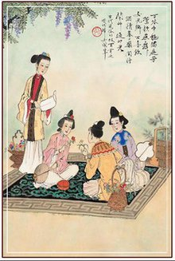

节日简介
端午节，为每年农历五月初五。据《荆楚岁时记》记载，因仲夏登高，顺阳在上，五月是仲夏，它的第一个午日正是登高顺阳好天气之日，故五月初五亦称为“端阳节”
民间习俗
端午节起源于中国，最初为古代百越地区（长江中下游及以南一带）崇拜龙图腾的部族举行图腾祭祀的节日，百越之地春秋之前有在农历五月初五以龙舟竞渡形式举行部落图腾祭祀的习俗...
龙舟竞渡

斗草之戏
起源考证
端”字有“初始”的意思，因此“端五”就是“初五”。而按照历法，五月正是“午”月因此“端五”也就渐渐变成了“端午”。起源传说关于端午节的来历归纳起来，大致有以下诸说...
文学记述
又到端午时,诗词歌赋中觅粽香。大多数人都认同端午节屈原说，一些中国现代文学家，把屈原投汨罗江自杀殉国的农历五月初五日定为诗人节，赋予这一传统节日崇高的诗意...